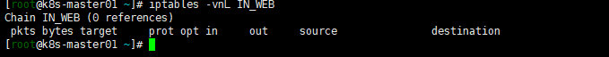

state 模块
-
对于state模块的连接而言，“连接"其中的报文可以分为5种状态，报文状态可以为NEW、ESTABLISHED、RELATED、INVALID、UNTRACKED
-
NEW: 新连接得第一个包为new
-
ESTABLISHED: NEW状态包后面的包的状态理解为ESTABLISHED，表示已建立链接
-
RELATED：有些报文返回是需要多个进程直接相互配合进项，比如FTP服务命令进程和数据进程是有关系的，因此数据链接的报文可能就是RELATED，因为他是由命令进程控制的。
-
INVALID: 报文没有被识别，包没有状态，包的状态INVALID，可以主动屏蔽INVALID的报文
-
UNTRACED:报文没有被追踪，表示无法找到相关的链接
-
因此：客户端，怎样判断这些报文是为了回应我们之前发出的报文，还是主动向我们发送的报文呢？
iptables -t fiflter -I INPUT -m state --state RELATED,ESTABLISHED -j ACCEPT
则表示，客户端不允许被主动发起报文。
黑白名单
-
方式一：（不推荐）设置链路的默认规则为DROP\
##1、 设置链路的默认规则为Drop iptables -P INPUT -j DROP ##2、放行 iptables -I INPUT --dport 80 -j ACCEPT ## 问题 如果不小心执行iptahles -F 的会导致所有请求无法访问 -
方式二：（推荐）设置链路的默认规则为ACCEPT，在末尾设置DROP
iptables -P INPUT -j ACCEPT iptables -I INPUT --dport 80 -j ACCEPT iptables -A INPUT -j DROP
自定义链路
#1. -N 创建自定义表
iptables -t filter -N IN_WEB
#2. 常看自定义表
iptables --line -vnL IN_WEB
##显示如下 ： 0 references 表示没有被引用

#3、在默认链路上引用IN_WEB
## 在INPUT链路上插入规则，表示访问80的端口，跳转到IN_WEB自定义链路上
iptables -I INPUT -p tcp --dport 80 -j IN_WEB
[root@k8s-master01 ~]# iptables -vnL INPUT
Chain INPUT (policy ACCEPT 273 packets, 24366 bytes)
pkts bytes target prot opt in out source destination
2 120 IN_WEB tcp -- * * 0.0.0.0/0 0.0.0.0/0 tcp dpt:80
8339 783K KUBE-EXTERNAL-SERVICES all -- * * 0.0.0.0/0 0.0.0.0/0 ctstate NEW /* kubernetes externally-visible service portals */
828K 177M KUBE-FIREWALL all -- * * 0.0.0.0/0 0.0.0.0/0
[root@k8s-master01 ~]# iptables -vnL IN_WEB
Chain IN_WEB (1 references)
pkts bytes target prot opt in out source destination
2 120 REJECT tcp -- * * 0.0.0.0/0 0.0.0.0/0 tcp dpt:80 reject-with icmp-port-unreachable
[root@k8s-master01 ~]# curl 127.0.0.1
curl: (7) Failed connect to 127.0.0.1:80; 拒绝连接